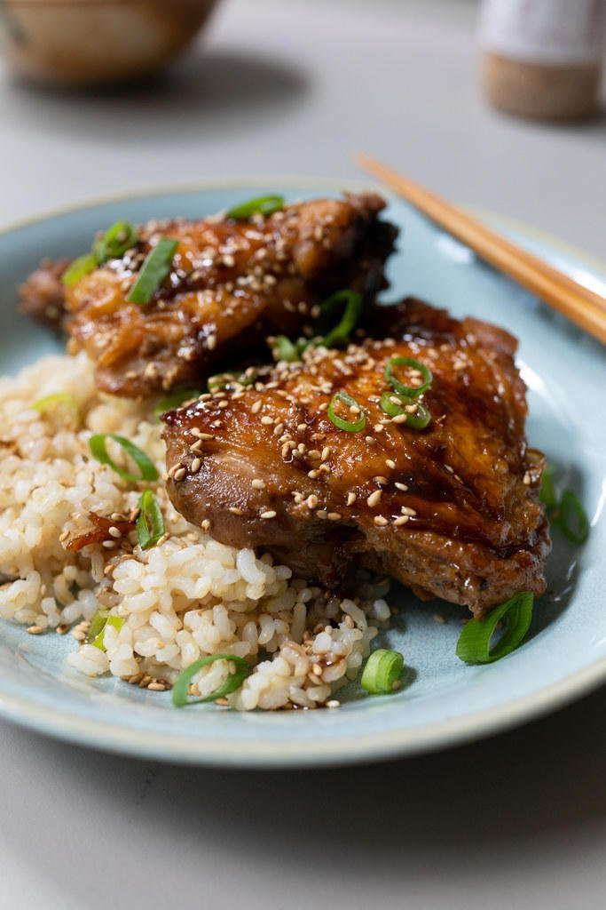

Shoyu Chicken

Hawaiian style comfort food
Shoyu Chicken is a popular local dish found at many restaurants in Hawaii. It is easy to make at home with basic pantry ingredients like shoyu, sugar, and garlic...here's the step by step photo recipe
Ingrediants
- 2 pounds skin on, bone-in chicken thighs (about 4 pieces)
- ½ cup shoyu
- ½ cup brown sugar
- ½ cup water
- 2 tablespoons rice vinegar
- 3 garlic cloves, smashed
- 1 2-inch knob of ginger, peeled and sliced
- 2 stalks green onions (optional)
- 1 tablespoon sesame seeds (optional)
Cooking Instructions
- Over medium-high heat, brown chicken (skin-side down) in a saucepan. Brown for 5 minutes, until the skin is a deep golden color.
- Mix together in a bowl: shoyu, sugar, water, and rice vinegar. Pour the liquid mixture over the chicken in the sauce pan.
- Add in the smashed garlic and sliced ginger. Bring mixture to a boil, then turn back down to low heat. Put on a lid and let the chicken simmer (skin side up) for 10 minutes.
- Lift the lid. Turn the chicken skin-side down, and simmer for another 10 minutes. Remove chicken onto a plate. Reduce the sauce over medium heat until thick (like the thickness of honey).
- Serve the chicken over a big bowl of rice. Finish with chopped green onions, a sprinkle of sesame seeds, and drizzle on the sauce. It's onolicious ^_^